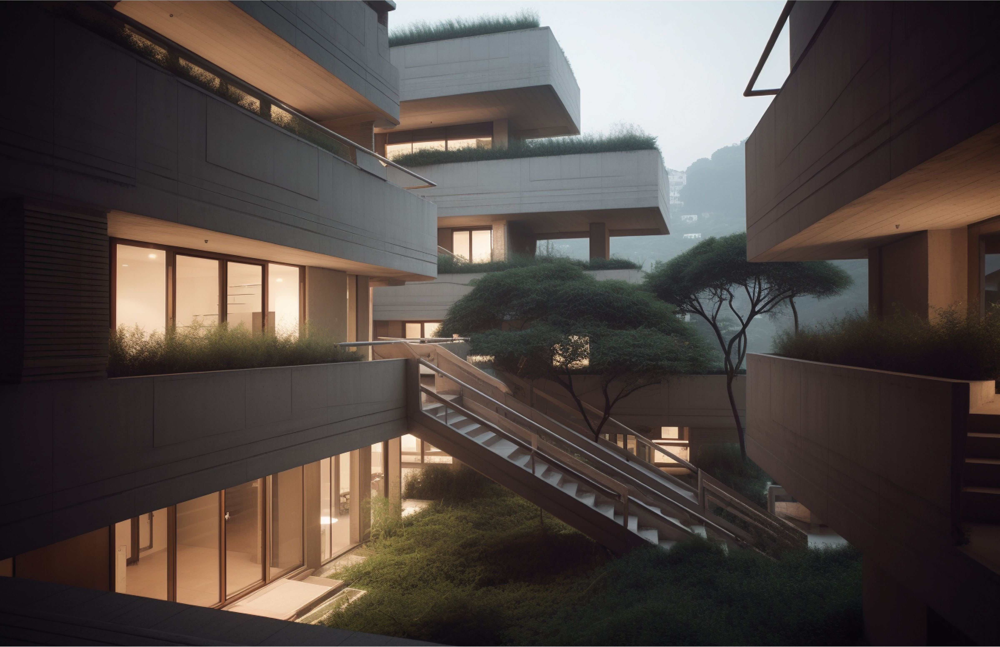
Details
In the foothills of Rio de Janeiro's Lagoa neighborhood, an area known for its tall highrises located on along and among the trees and mountains, Caixa Social reimagines contemporary housing and community building. Inspired by Moshe Safdie's Montreal Habitat 67, Caixa creates a community in harmony with its ecology through the use of modular units, which allow for a highly customizable form and fits the needs of a diverse population such as Rio's.
Documents
The Modern Community
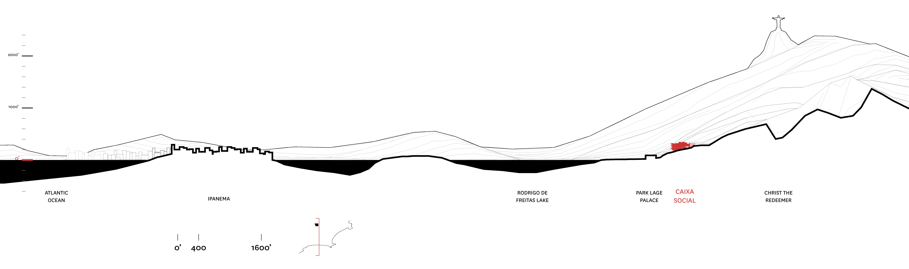
The Mountains of Rio
Caixa Social is nestled in one of Rio's many scenic mountainsides. Located between Lagoa, just north of Copacabana, and beneath Christ the Redeemer, this spot is the quintessential "urban jungle".
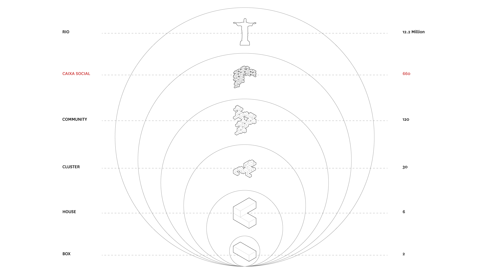
Caixa Social: The Social Box
Starting with the box (as a matter of fact, the walls of the box), each component of the Caixa is modular, repeated, and additive. This is to say: a box makes a room, two boxes make a house, five houses make a cluster, and 3 clusters make a community... and so on.
Pre-Fab Modular Living
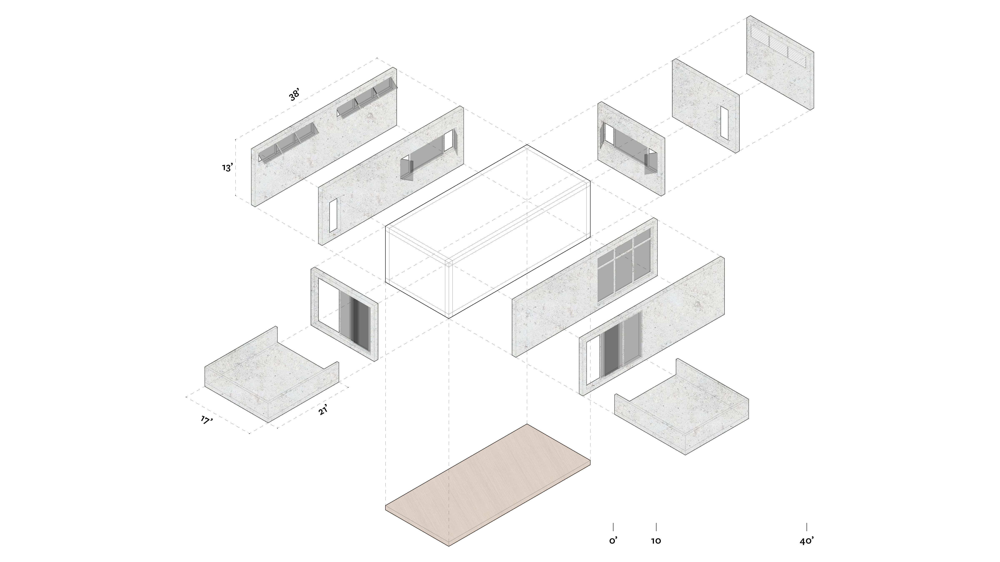
The Box
The box is the basic building unit for the entire Caixa Social. Each box is configured with
different walls, windows, doors, and vents depending on program, size of the unit, and the box's
location.
Boxes are made of pre-fabricated concrete, so the installation process is easier given the
complex terrain and conditions. Furthermore, the structural walls and floors allow for longer
cantilevers, affording all residents at least one private outdoor space.
Units of Housings
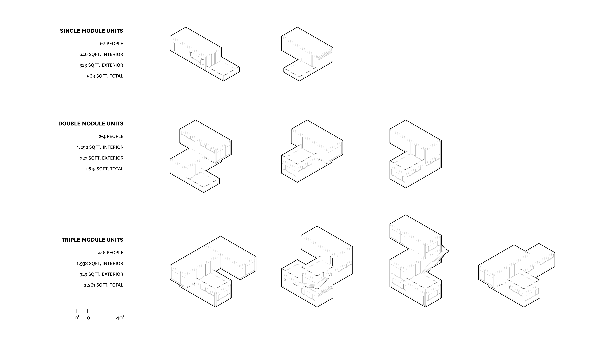
Typologies
There are (nearly) infinite possibilities as far as arranging boxes to make units goes. Here are a few examples which show different unit types for a studio, one bedroom, and 2-3 bedroom units. It's important to note each of the units, regardless of size, have at least one terrace/balcony.
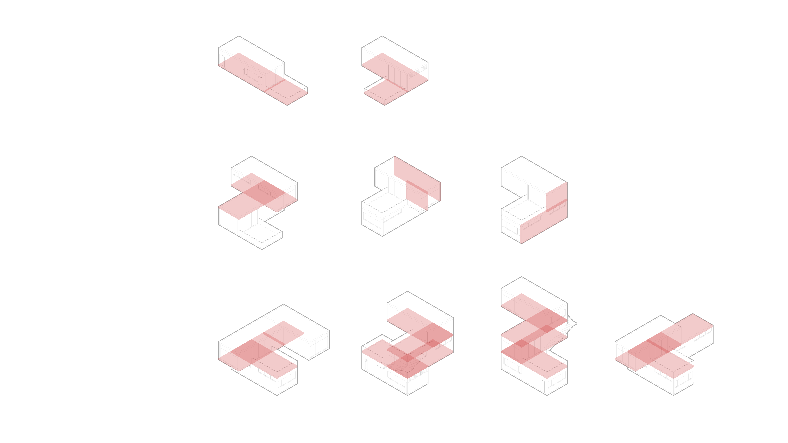
Structure
Units share walls and floor/ceiling plates, as to ensure a strengthened structure and more flexibility in terms of form.
The Cluster
Community Building
Boxes come together to form units, a small group of units creates a cluster. Each cluster has at least one public outdoor space per level of circulation. Circulation occurs once every three levels, which helps with air circulation, sunlight, and creates large areas which open to the natural surroundings of Caixa.
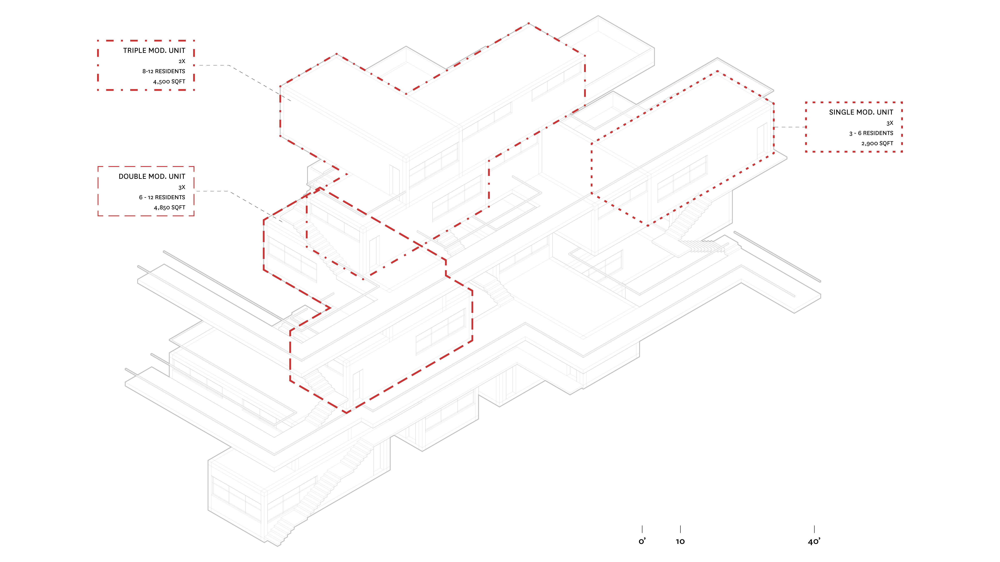
Living Indoors and Out
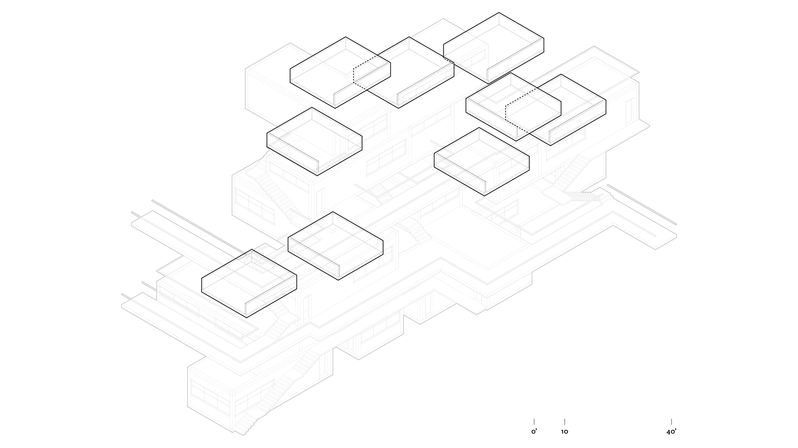
Creating Space
Nature, and a connection with it, is an integral part of Caixa's design. Similar to Safdie's Habitat, Caixa ensures that all residents have access to private and public outdoor spaces. Private spaces come in the form of terraces and balconies within each unit, regardless of size or location. Public outdoor spaces are located within circulation paths and come in all shapes and sizes, as well as uncovered and covered, all depending on what a resident wants or needs in that moment.
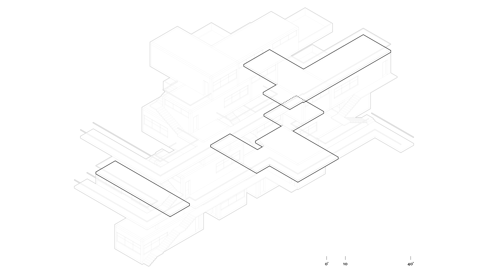
The Community
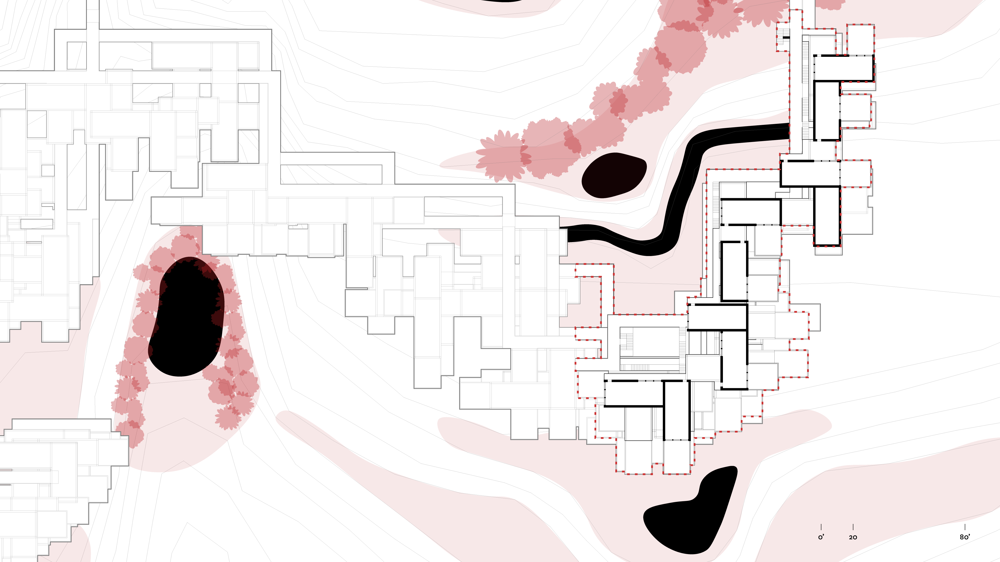
Caixa Social
Nestled into Rio de Janiero's hilly, urban landscape, Caixa Social is a new approach to housing and community in a city unique for its vast urban landscape positioned beautifully beside its stunning beaches, mountains, and forests.
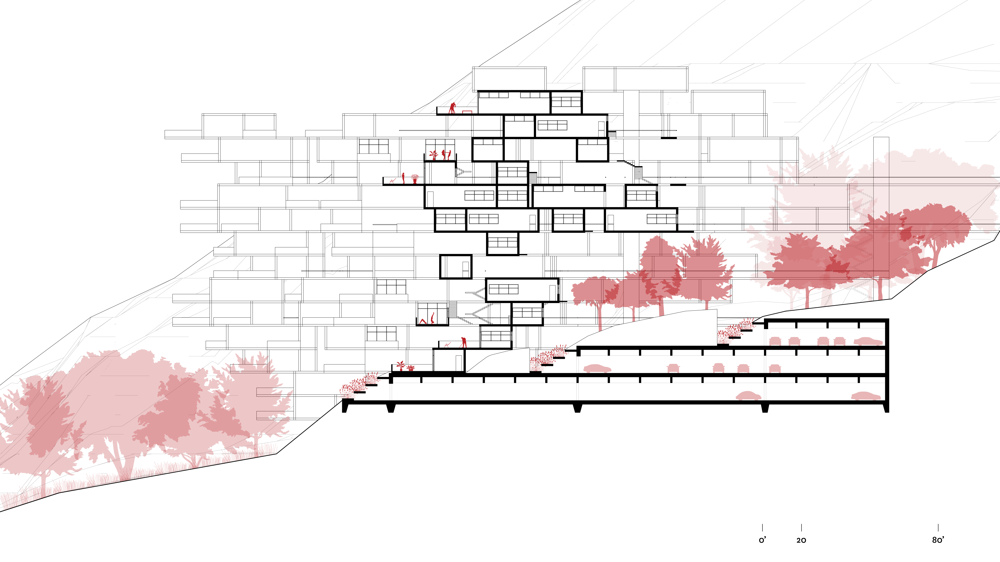